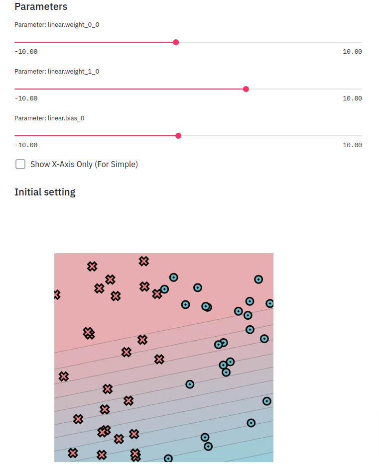

Fundamentals¶

This introductory module is focused on introducing several core technologies used for testing and debugging in future modules, and also includes some basic mathematical foundations. In this module, you will start to build up some of the infrastructure for MiniTorch.
All starter code is available in https://github.com/minitorch/Module-0 . Before starting this assignment, make sure to set up your workspace following Setup, and read Contributing to understand how the code should be organized.
Each module has a set of Guides to help with the tasks. We recommend working through the assignment and utilizing the Guides suggested for each task.
Guides
Tasks¶
Task 0.1: Operators¶
This task is designed to help you get comfortable with style checking and testing. We ask you to implement a series of basic mathematical functions. These functions are simple, but they form the basis of MiniTorch. Make sure that you understand each of them as some terminologies might be new.
Todo
Complete the following functions in minitorch/operators.py and pass tests marked as task0_1.
-
minitorch.operators.mul(x, y)¶ \(f(x, y) = x * y\)
-
minitorch.operators.id(x)¶ \(f(x) = x\)
-
minitorch.operators.eq(x, y)¶ \(f(x) =\) 1.0 if x is equal to y else 0.0
-
minitorch.operators.neg(x)¶ \(f(x) = -x\)
-
minitorch.operators.add(x, y)¶ \(f(x, y) = x + y\)
-
minitorch.operators.max(x, y)¶ \(f(x) =\) x if x is greater than y else y
-
minitorch.operators.lt(x, y)¶ \(f(x) =\) 1.0 if x is less than y else 0.0
-
minitorch.operators.sigmoid(x)¶ \(f(x) = \frac{1.0}{(1.0 + e^{-x})}\)
(See https://en.wikipedia.org/wiki/Sigmoid_function .)
Calculate as
\(f(x) = \frac{1.0}{(1.0 + e^{-x})}\) if x >=0 else \(\frac{e^x}{(1.0 + e^{x})}\)
for stability.
- Parameters
x (float) -- input
- Returns
sigmoid value
- Return type
float
-
minitorch.operators.relu(x)¶ \(f(x) =\) x if x is greater than 0, else 0
(See https://en.wikipedia.org/wiki/Rectifier_(neural_networks) .)
- Parameters
x (float) -- input
- Returns
relu value
- Return type
float
-
minitorch.operators.inv(x)¶ \(f(x) = 1/x\)
-
minitorch.operators.inv_back(x, d)¶ If \(f(x) = 1/x\) compute \(d \times f'(x)\)
-
minitorch.operators.relu_back(x, d)¶ If \(f = relu\) compute \(d \times f'(x)\)
-
minitorch.operators.log_back(x, d)¶ If \(f = log\) as above, compute \(d \times f'(x)\)
Task 0.2: Testing and Debugging¶
Note
This task requires familiarity with testing and property tests. Make sure to first read the guide on Property Testing, and consult the Hypothesis documentation.
We ask you to implement property tests for your operators from Task 0.1. These tests should ensure that your functions not only work but also obey high-level mathematical properties for any input. Note that you need to change arguments for those test functions.
Todo
Complete the test functions in tests/test_operators.py marked as task0_2.
Task 0.3: Functional Python¶
Note
This task requires familiarity with basic functional programming concepts and notation. This subject is outside the scope of guides provided here, but this tutorial is a good starting place.
To practice the use of higher-order functions in Python, implement three basic functional concepts. Use them in combination with operators described in Task 0.1 to build up more complex mathematical operations that work on lists instead of single values.
Todo
Complete the following functions in minitorch/operators.py and pass tests marked as tasks0_3.
-
minitorch.operators.map(fn)¶ Higher-order map.

See https://en.wikipedia.org/wiki/Map_(higher-order_function)
- Parameters
fn (one-arg function) -- Function from one value to one value.
- Returns
A function that takes a list, applies fn to each element, and returns a new list
- Return type
function
-
minitorch.operators.zipWith(fn)¶ Higher-order zipwith (or map2).

See https://en.wikipedia.org/wiki/Map_(higher-order_function)
- Parameters
fn (two-arg function) -- combine two values
- Returns
takes two equally sized lists ls1 and ls2, produce a new list by applying fn(x, y) on each pair of elements.
- Return type
function
-
minitorch.operators.reduce(fn, start)¶ Higher-order reduce.

- Parameters
fn (two-arg function) -- combine two values
start (float) -- start value \(x_0\)
- Returns
function that takes a list ls of elements \(x_1 \ldots x_n\) and computes the reduction \(fn(x_3, fn(x_2, fn(x_1, x_0)))\)
- Return type
function
Task 0.4: Modules¶
Note
This task requires familiarity with neural network Modules. Please read Modules to get started. If you want more context for how modules are used, you may find it helpful to skip ahead and read the torch module tutorial.
This task is to implement the core structure of the minitorch.Module
class. We ask you to implement a tree data structure that
stores named minitorch.Parameter on each node. Such a data structure
makes it
easy for users to create trees that can be walked to find all of the
parameters of
interest.
To experiment with the system use the Module Sandbox:
>>> streamlit run app.py -- 0
Todo
Complete the functions in minitorch/module.py and pass tests marked as tasks0_4.
-
minitorch.Module.train(self)¶ Set the mode of this module and all descendent modules to train.
-
minitorch.Module.eval(self)¶ Set the mode of this module and all descendent modules to eval.
-
minitorch.Module.named_parameters(self)¶ Collect all the parameters of this module and its descendents.
- Returns
Contains the name and
Parameterof each ancestor parameter.- Return type
list of pairs
-
minitorch.Module.parameters(self)¶ Enumerate over all the parameters of this module and its descendents.
Task 0.5: Visualization¶
Note
This task requires familiarity with visualization tools described in Visualization.
For the first few assignments, we use a set of datasets implemented in minitorch/datasets.py, which are 2D point classification datasets. (See TensorFlow Playground for similar examples.) Each of these dataset can be added to the visualization.
To experiment with the system use:
>>> streamlit run app.py -- 0
Read through the code in project/run_torch.py to get a sneak peek of an implementation of a model for these datasets using Torch.
You can also provide a model that attempts to perform the classification by manipulating the parameters.
Todo
Start a streamlit server and print an image of the dataset. Hand-create classifiers that split the linear dataset into the correct colors.
Add the image in the README file in your repo along with the parameters that your used.